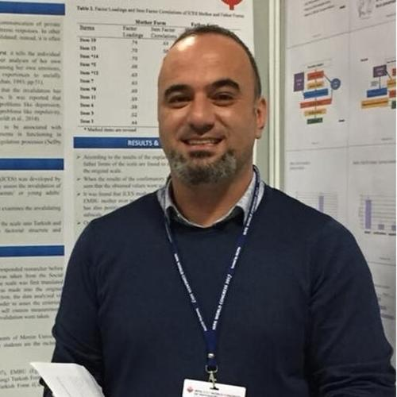
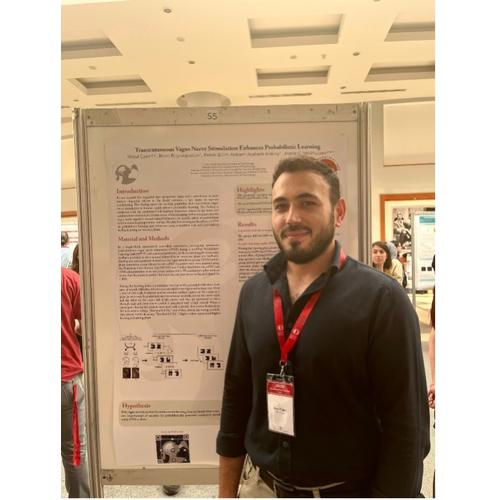

MUPLAB
We conduct experimental, clinical, and applied psychology research — openly sharing our data, analysis code, and up-to-date results.
MUPLAB is an academic center conducting experimental, clinical, and applied research to understand individual and social behavior. We combine modern research methods with open-science principles.
Some of our projects are maintained as living reviews that update continuously.
Experimental study of learning processes, recall, and memory performance.
Behavioral and electrophysiological measurement of response inhibition, executive functions, and attention.
Autonomic and neural signals; neuromodulation methods such as vagus nerve stimulation.
Stress and emotional disorders; translating basic findings into practice.
The first version of our living meta-analysis on the effect of taVNS on learning is now available.
Read more →Our lab continues to grow with undergraduate and graduate researchers.
Read more →Data and analysis code for all our new studies are shared via OSF and GitHub.
Read more →

A continuously updated, PROSPERO-registered systematic review and meta-analysis.
Living meta-analysis →Effect of taVNS in a probabilistic learning paradigm; learning and extinction phases.
Details →An open archive of scales developed and adapted into Turkish.
Browse →Faculty of Humanities and Social Sciences, Çiftlikköy Campus, 33343 Mersin, Türkiye